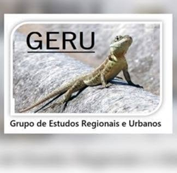

O Grupo de Estudos Regionais e Urbanos (GERU) dedica-se à pesquisa aprofundada sobre as dinâmicas sociais, econômicas e ambientais que moldam o desenvolvimento regional e urbano. Nossos pesquisadores exploram temas como políticas públicas, desenvolvimento sustentável, desigualdades socioespaciais e planejamento urbano, buscando contribuir para soluções inovadoras e sustentáveis para os desafios contemporâneos.
Acompanhe nossas novidades no Facebook: Facebook do GERU